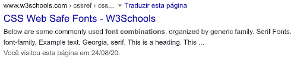

Ao declarar a fonte em CSS é importante inserir uma combinação de mais de 1 fonte. Chamamos isso de "safe combination". Isso porque se o navegador de um dispositivo não reconhecer uma fonte, ele tenta a próxima.
<style>
body {
font-family: Verdana, Geneva, Tahoma, sans-serif;
Cambria, Cochin, Georgia, Times, 'Times New Roman', serif
Georgia, 'Times New Roman', Times, serif
etc...
}
</style>
Pesquise no Google " CSS web safe font combinations" e acesse o resultado da W3Schools

Também é possível, ao escolher a família de fontes, declarar um parâmetro genérico, tipo "serif". É como dizer ao navegador "Escolhe qualquer fonte aí, contanto que seja com serifa", e de fato, a escolha da fonte ficará a cargo do navegador.
<style>
body {
font-family: serif;
sans-serif;
monospace;
etc...
}
</style>
Volar para a página anterior.
Seguir para a página seguinte.